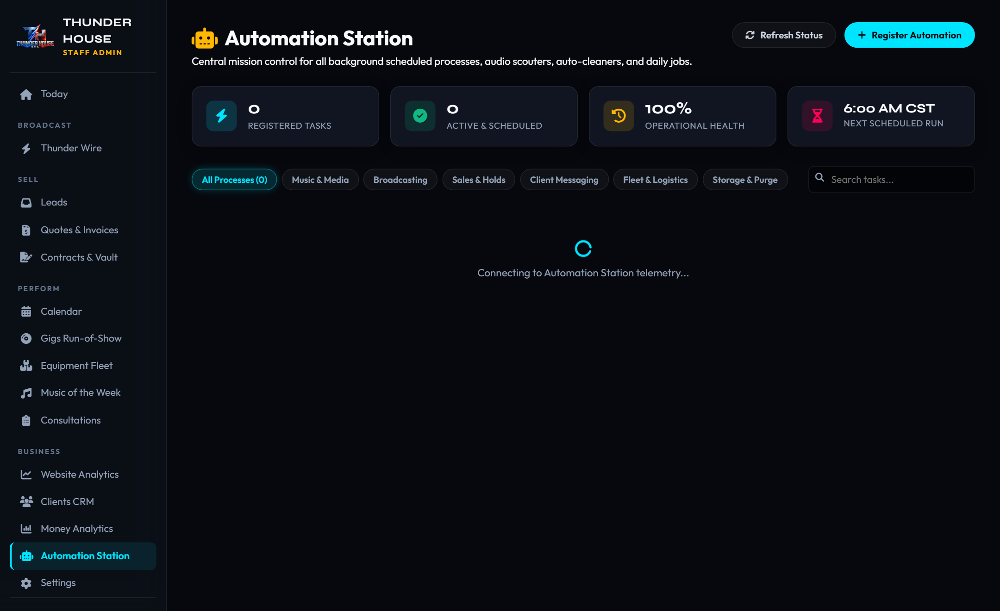

The Automation Station: Background Schedulers & Daemons
Located at admin/automations.html, the Automation Station solves the common problem of "invisible" background scripts. It provides a central command room where every scheduled task, auto-downloader, auto-messager, and database cleaner can be observed, scheduled, toggled on or off, and tested on demand.
1. The Automation Station Cockpit
In complex systems, background cron jobs often run silently until something breaks or fills a storage drive. The Automation Station eliminates this blind spot by centralizing all recurring background tasks into a single real-time dashboard:

admin/automations.html. Displays master switches, daily run times, operational health status, and execution logs.
Interactive Controls on Every Automation Card:
- Master ON / OFF Toggle: Flipping the glowing cyber switch immediately updates
public.thunderhouse_automations. If a process is toggled OFF, its background runner or Python daemon safely skips execution until re-enabled. - Schedule Adjuster: For daily tasks, change the target run time (e.g.
06:00 CST) right on the card. For interval tasks, adjust the recurring cadence (Every 15 min, 30 min, 1 hour, etc.). - On-Demand "Run Now" (⚡): Test any process immediately without waiting for its scheduled time. The card displays a spinning indicator and reports the execution outcome.
- Execution History Logs (📜): Click Logs to inspect the exact duration in milliseconds, timestamp, and summary output of previous runs.
2. The 8 Core Automated Processes Explained
Runs daily at 6:00 AM CST. Discovers new weekly Hip-Hop/R&B/Pop releases, tags ID3 metadata, downloads Clean and Dirty pairs to E:\Thunder House - Music, scrapes social links, and pushes streams to the cloud vault.
Runs daily at 6:15 AM CST. Audits Supabase storage and prunes temporary mobile stream files older than 30 days, keeping cloud usage under 1.5 GB while leaving master files on your hard drive untouched.
Runs every 60 minutes. Polls RSS feeds from XXL, Billboard, and HipHopDX, auto-categorizes stories into the 5 morning show blocks, and scores virality.
Runs every 60 minutes. Scans pending quote intakes. If a 72-hour hold has expired without a retainer payment, it automatically releases the date back to open calendar availability.
Runs daily at 9:00 AM CST. Checks upcoming gigs 14 days away and sends automated reminder emails with Square payment links to clients with unpaid balances.
Runs daily at 11:00 AM CST. Dispatches a thank-you note and direct Google Review link to clients 48 hours after their performance completes.
Runs daily at 12:00 PM CST. Flags any equipment marked "In Transit" if the event ended over 24 hours ago, preventing lost gear.
Event-driven hook. Triggers whenever a DJ clicks "Mark Gig Complete", archiving guest song requests and clearing temporary audio.
3. How to Register Future Automations
Whenever our engineering team builds a new automated script, cron job, or webhook, it must be registered into the Automation Station so staff can manage it:
- Click the "+ Register Automation" button in the top right corner of
admin/automations.html. - Enter a unique Slug ID (e.g.,
tiktok_reels_sync), Title, Category, and Runner Type. - Specify the Schedule (Daily at HH:MM or Interval in minutes).
- Click Save & Register. The automation instantly appears in the grid, synced to the database!